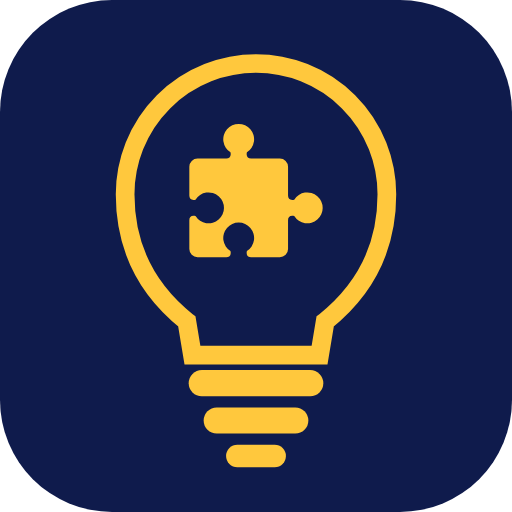

Abra no seu navegador 💡
O navegador do Instagram não consegue mostrar o portal. Abra no Chrome ou no Safari para ver tudo certinho.
Abrir no Chrome Abrir no Safari- Toque nos três pontinhos (⋯) no canto superior direito.
- Escolha Abrir no navegador externo.
- Toque nos três pontinhos (⋮) no canto superior direito.
- Escolha Abrir no Chrome ou Abrir no navegador.